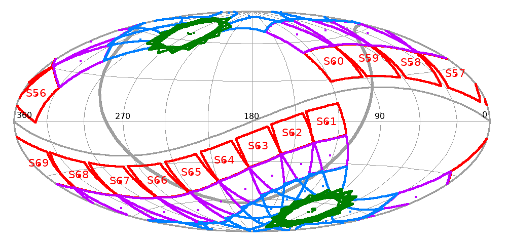
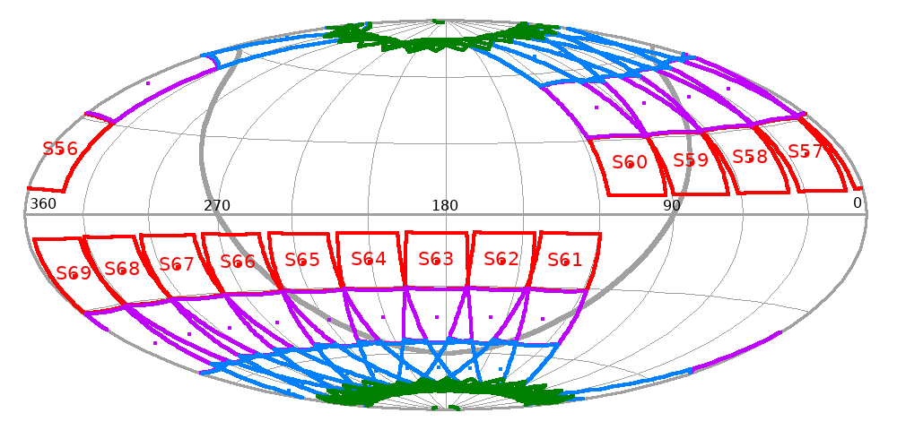

TESS completed its prime mission in July of 2020 and then entered its first extended mission which completes in September, 2022.
A second extended mission is planned and will last approximately three years during which it will continue to scan the sky for exoplanets and transient events. Again this mission extension will be extensively community focused with a large Guest Investigator program running through Cycles 5, 6, and 7.
The Cycle 5 call for proposals was released on November 23rd, 2021.
Observing strategy
TESS Cycle 5 will observe fields in both the Northern and Southern Ecliptic Hemispheres and be collected during the first year of the second extended mission, from September 2022 until September 2023. It will cover sectors 56 through 69.
The pontings for Cycle 5 can be found in the table below which contains the details of TESS spacecraft orientation. Note: All future values are provisional and may be changed, although there are currently no plans to do so.
Cycle 5 Pointings
| Sector | Dates | Spacecraft R.A and Dec | Roll Angle: Camera 1 | Roll Angle: Camera 2 | Roll Angle: Camera 3 | Roll Angle: Camera 4 |
|---|---|---|---|---|---|---|
| 56 | 2022 Sep 01 - 2022 Sep 30 | 324.2778, 46.3448, 36.2524 | 345.3641, 14.9584, 114.9946 | 333.0522, 36.2959, 120.4301 | 311.7635, 55.4305, 316.0082 | 266.0806, 65.8589, 356.4813 |
| 57 | 2022 Sep 30 - 2022 Oct 29 | 344.2275, 56.4121, 44.0100 | 11.2789, 26.1085, 115.3434 | 356.4707, 47.0635, 124.3509 | 325.1021, 63.839, 330.6667 | 267.3759, 65.2046, 23.5785 |
| 58 | 2022 Oct 29 - 2022 Nov 26 | 9.3118, 67.6524, 45.3615 | 40.5491, 36.2439, 109.6005 | 25.5780, 58.118, 120.8132 | 337.3171, 73.7866, 345.6879 | 269.2292, 64.8619, 50.4399 |
| 59 | 2022 Nov 26 - 2022 Dec 23 | 52.9755, 77.1746, 26.5121 | 73.7282, 42.2275, 97.6902 | 66.0846, 65.8454, 104.0137 | 344.0283, 84.2927, 4.8614 | 271.1888, 64.9027, 76.4900 |
| 60 | 2022 Dec 23 - 2023 Jan 18 | 125.6742, 77.3113, 337.3244 | 107.8987, 42.077, 83.4491 | 114.3984, 65.8, 78.0783 | 196.6100, 85.1352, 176.8993 | 272.8584, 65.2836, 101.6845 |
| 61 | 2023 Jan 18 - 2023 Feb 12 | 118.0446, -36.0902, 162.2198 | 128.3877, -1.3902, 255.7096 | 122.0484, -24.5948, 254.2533 | 112.6618, -47.4063, 68.6167 | 89.0633, -68.2569, 48.2313 |
| 62 | 2023 Feb 12 - 2023 Mar 10 | 135.2412, -42.2415, 151.5884 | 151.7028, -9.2726, 249.0895 | 141.9022, -31.4789, 245.6047 | 125.8972, -52.4618, 54.6812 | 87.1920, -67.9113, 20.4926 |
| 63 | 2023 Mar 10 - 2023 Apr 06 | 153.0613, -50.6996, 142.7405 | 175.2057, -19.2528, 246.0346 | 162.6187, -40.7012, 239.6145 | 138.6962, -59.5121, 40.9031 | 85.9728, -67.273, 353.0104 |
| 64 | 2023 Apr 06 - 2023 May 04 | 173.2653, -60.8650, 137.2810 | 200.6103, -29.7625, 247.6364 | 186.2919, -51.2622, 238.1410 | 150.9006, -68.2418, 26.9977 | 85.6613, -66.4778, 325.8518 |
| 65 | 2023 May 04 - 2023 Jun 02 | 201.6239, -71.5724, 140.7443 | 230.0361, -38.584, 255.1738 | 217.5212, -61.2946, 245.3889 | 161.5647, -78.2042, 11.9052 | 86.2923, -65.7004, 299.0834 |
| 66 | 2023 Jun 02 - 2023 Jul 01 | 259.1702, -78.7974, 173.9147 | 264.0456, -42.8477, 268.3903 | 262.3815, -66.8306, 266.9995 | 139.0865, -88.5404, 323.9549 | 87.6857, -65.1148, 272.8054 |
| 67 | 2023 Jul 01 - 2023 Jul 29 | 326.7691, -74.2796, 217.4678 | 298.6200, -40.7194, 282.5601 | 310.1548, -63.747, 291.8767 | 16.7557, -80.4949, 176.4545 | 89.5060, -64.8444, 247.1861 |
| 68 | 2023 Jul 29 - 2023 Aug 25 | 359.2829, -64.2357, 226.0975 | 328.7741, -33.4649, 292.0506 | 344.1780, -54.9092, 303.0107 | 26.1790, -70.6613, 161.0416 | 91.3676, -64.9258, 222.3524 |
| 69 | 2023 Aug 25 - 2023 Sep 20 | 20.0449, -54.2315, 222.7721 | 354.1707, -23.8425, 295.7196 | 8.5708, -44.7848, 304.0040 | 37.5409, -61.9896, 147.6933 | 92.9455, -65.3159, 198.1078 |
Table of Cycle 5 pointings. All positions and roll angles are given in degrees (J2000).
The location of the sectors is also shown in the figures below.


Cycle 5 Highlights
The following data products will be available in Cycles 5.
- 2-minute cadence data for a select number of targets.
- 20-second cadence data for a select number of targets.
- 200-second full frame images instead of 10-minute full frame images.
The 20-second cadence mode will be allotted to ~2,000 targets per sector, with ~8,000 2-minute target slots per sector.
In Cycle 5 Key-Project proposal categories will once again be available. These are programs will have a maximum duration of 36 months and as such cover Cycle 5 and 6+.
Ground-based observing focused programs are also solicited provided that they support the analysis and/or interpretation of TESS data. Up to $500K will be used to support ground-based programs.
In addition to joint Swift and Fermi programs, Cycle 5 (and beyond) will solicit a new NICER joint program.
As in the first extended mission, TESS will observe each sector continuously for two spacecraft orbits, ~27 days. Data are planned to be downloaded twice per orbit, approximately every 7 days.
For more information about proposing within the second extended mission please see the proposal page.